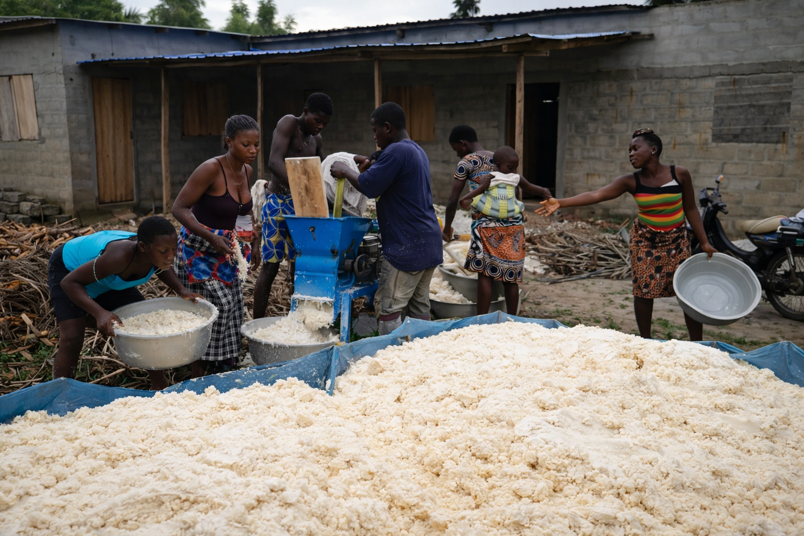

1
Collecte Responsable
Valorisation du manioc et de la citronnelle auprès de nos producteurs partenaires.
2
Transformation Écologique
Transformation en amidon, manioga et huiles essentielles de haute qualité.

3
Impact & Qualité
Un processus maîtrisé pour attirer clients industriels et distributeurs.